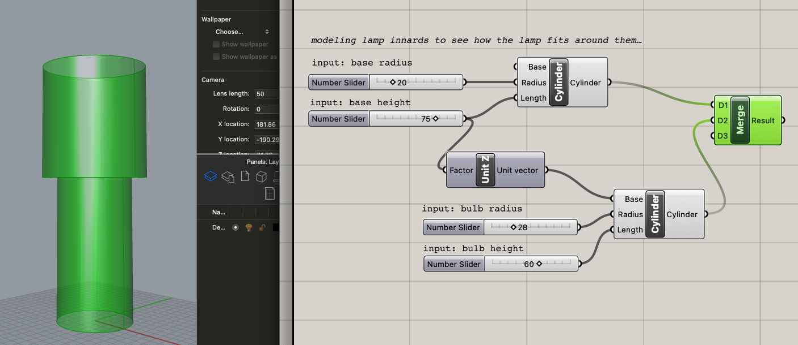
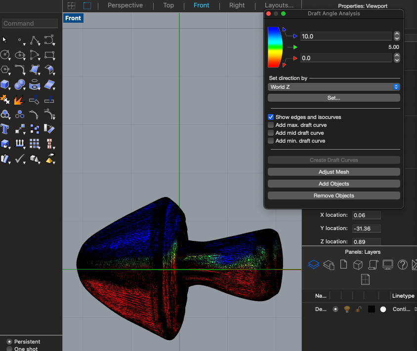
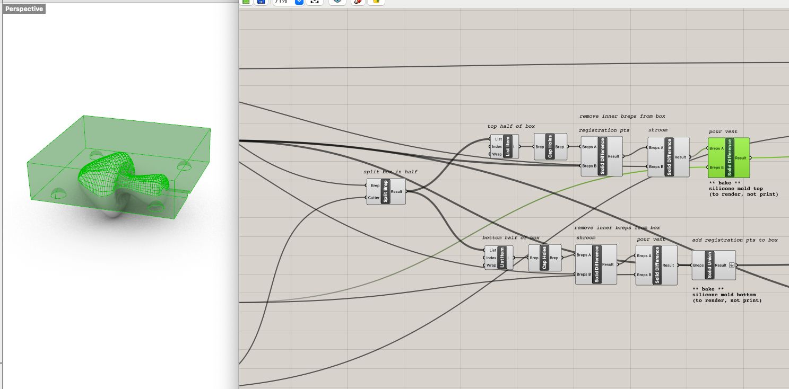
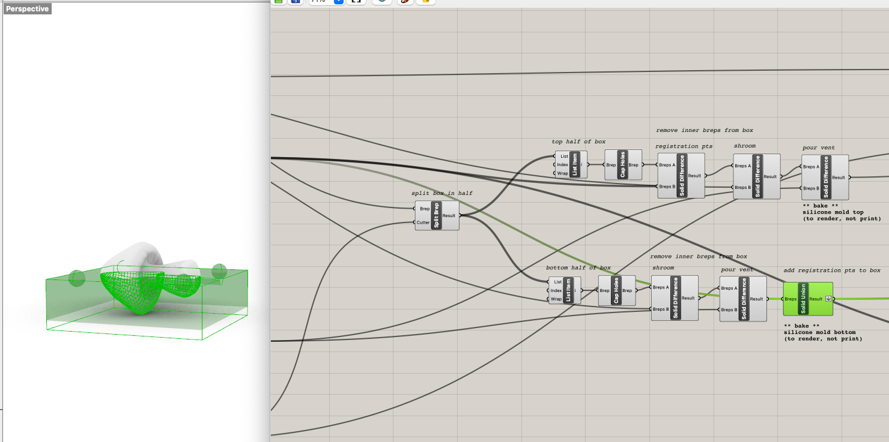
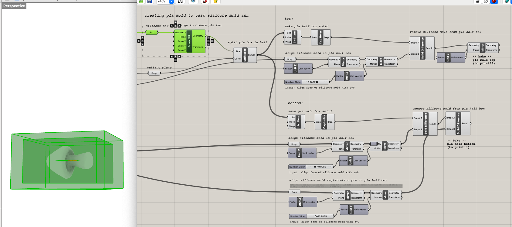

For the first part of this assignment, we needed to *finish* making the lamp from last week. I had already acquired and measured the lamp innards, and I had a general concept and had done some test printing at a small scale, but needed to land on a final model and actually do the damn thing.
If you recall, my plan was to make a mushroom lamp. I, however, did not make a mushroom lamp (although it does still resemble one, in a more abstract sense). I got sick of messing around with Rhino, kept confusing myself with how I would connect the cap and the stem without adhesive, and decided I would rather play around in Grasshopper again. It's just so much more fun?? You get to build out a definition then move knobs and watch it grow and change before your eyes?? Real life magic?! So I found a rad Grasshopper tutorial that used the Weaverbird plugin to create a parametric hanging lamp and followed along with that. There are lots of comments in my Grasshopper file that I'll link below of what's going down, so if you're curious, get in there. I'm not going to explain it all here.

I knew that whatever I made needed to hug the bottom of the base then get wider to accommodate the bulb, and I had a vision of printing it with this sparkly red PLA I bought for Halloween and having it be this disco blood droplet spreading little streams of light around everywhere. Then I remembered that one has to screw in a bulb, so if I wanted to print it in one piece, it needed to have a big enough opening to screw the bulb in through. This was disappointing, but at this point I had also just tested positive for covid and was being faced with my limits and mortality at all angles, so I just needed to make Something. Adorable tears of disco blood be damned. I was having a hard time envisioning what shape would best fit the lamp's structure, so I modeled the two main sections of the lamp innards as cylinders in Grasshopper with heights and widths corresponding to the base and bulb, then experimented with how the lamp design's parameters could shape around those.

Finally, it was time to slice up this bad boy in Cura and print. I flipped it over so that the wider opening was at the bottom and decided to use a raft and forgo supports. I set a slightly higher printing temperature (205) for the new filament (per Amazon review recommendations), and decided to print with concentric infill in case that happened to be prettier for light shining through. After a beautiful 4h 27m 15s of whirring, she came into existence. My iPad died during the timelapse, but you can see the first 2/3 being constructed below. You can also see how the raft simply did not want to let go of her top layer, so she's got a lil shag going on, but we're not gonna let that get us down.

Ta daaa! It fit! Let there be light!

For the second part of this assignment, we needed to design and fabricate a 2-part silicone mold. Next week, we would use that mold to cast at least 4 identical parts in plaster, ice, or gelatin. This week, we needed to design the master part that would eventually be cast, the silicone mold, and the 3D-printed PLA mold to cast the silicone mold in. My brain is breaking just typing this.
I, again, brainstormed via Pinterest board and decided I'd like to make a buncha cute lil shrooms since I'd given up on that concept for the lamp. I found a mushroom STL on CGTrader and got to work on modeling.

I was having trouble wrapping my head around creating a positive of a negative of a whatever, so I decided to start by modeling the silicone mold itself, then take the boolean difference of it to create the mold of the silicone mold that I would need to print. As evidenced in Part 1, I like Grasshopper more, so I decided to go that route rather than building directly in Rhino. This may have caused me more pain than gain, but I learned a lot! And this was my very first Grasshopper definition that I wrote without following any sort of tutorial. Definitely a struggle at times...but in the end, it worked, and hey, I'm proud of it! I'll say it!
I still began in Rhino though, first importing the mushroom STL, resizing it to be waaay less mesh, rotating it to be horizontal along the x-axis, performing a draft angle analysis to find where to bisect it in the mold, and arranging that midway line at the origin. I then performed a quad remesh to make it an even less complicated mesh and transformed that mesh into a brep via meshtonurb so it'd be easier to work with in boolean operations. (Okay, this isn't at all what I did at first, I actually tried to use it as a mesh in Grasshopper and was stuck for days in mesh boolean difference bullshit land, then finally figured out that this was a better way. You can read about that mesh era in Discord if you want to witness my confusion.)
In Grasshopper, I pointed a brep towards the mushroom in Rhino, created a box around it, then constructed and arranged registration points (4 spheres), a pour vent (solid cylinder extending from the shroom stem to the edge of the box), and a cutting plane to use in later split operations.


I then split that box in half with the cutting plane and created the top and bottom halves of the silicone mold. For both, half of the shroom and the pour vent needed to be removed. For the top, the registration points needed to be removed, while for the bottom, they needed to be added, so that each side of the mold could lock into the other when the plaster is setting.
 Aren't they cute?!

Then I needed to actually make the mold that I'd cast these in. To do so, I scaled up the original silicone mold box, split it in half, then aligned each half's silicone mold model to face the origin, and took the boolean difference of the silicone model from the larger half box. For the bottom half, I had to take a separate boolean difference with the registration points because of surface things, and I flipped it over just to avoid an extra rotational step in Cura later. I've commented what's happening at each step and where the baking needs to happen.



All together now!! The full set of what will exist in many a medium!

I exported the mold as a STL and tried slicing it in Cura and printing it, but I made it a liittle too small and can't pick up the silicone powder until class on Tuesday anyway (the joys of covid), so I'm going to wait until then to gather any printing recs before proceeding. Thus ends part one of molding! Next week I'll get crackin on casting the silicone mold and plaster shrooms.


I'll leave you with my full Grasshopper definition (which you can also view in the file below) just because I'm still so pleased that I finally got it to work. Hopefully I'll need to cast another mold someday and can reuse it...or a classmate can use it in their final project...anyone! Anything! Within reason. You can point to a brep centered at the origin in Rhino and adjust the number sliders to move the registration points and vent around. Regardless, I'm at least definitely using it for this project.